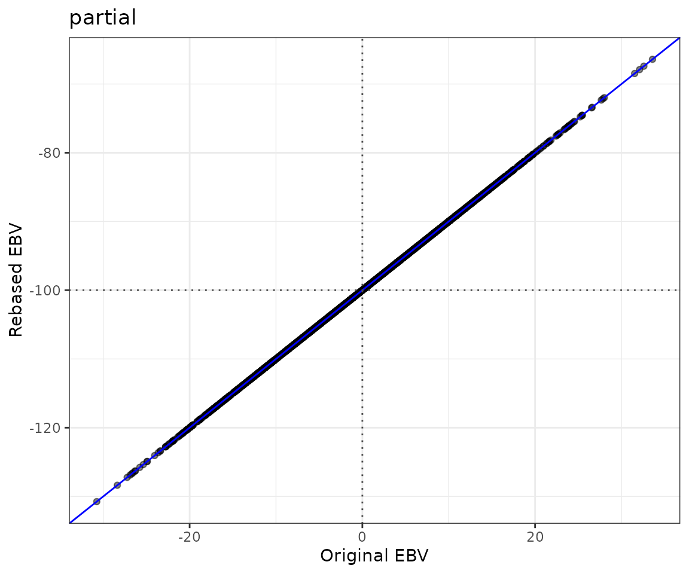
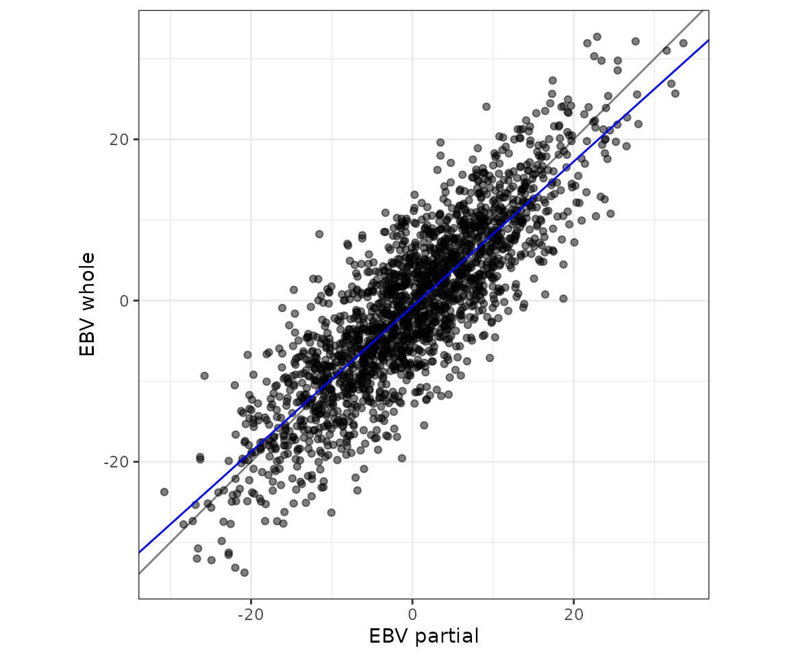
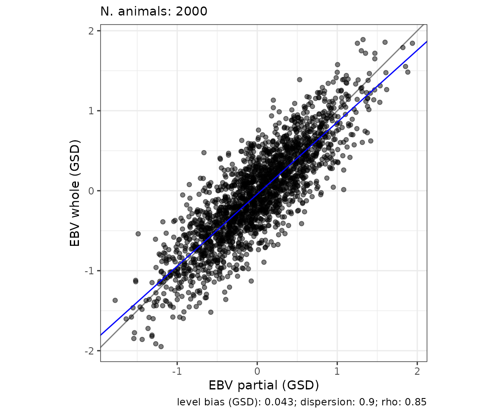
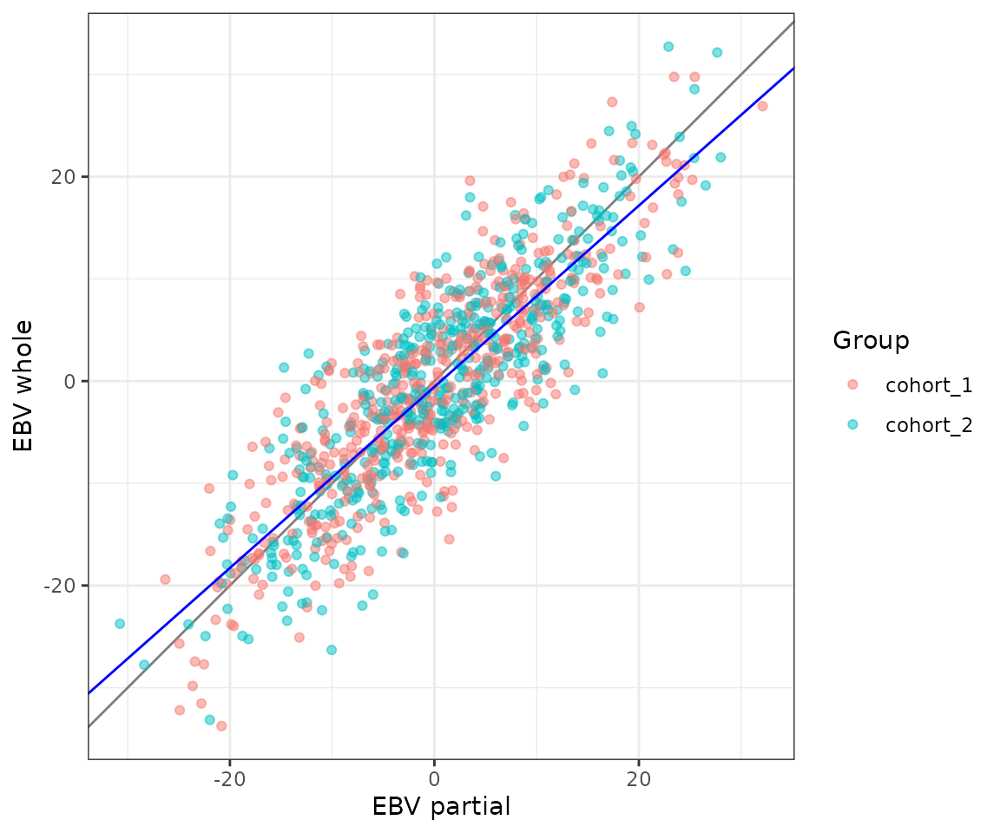
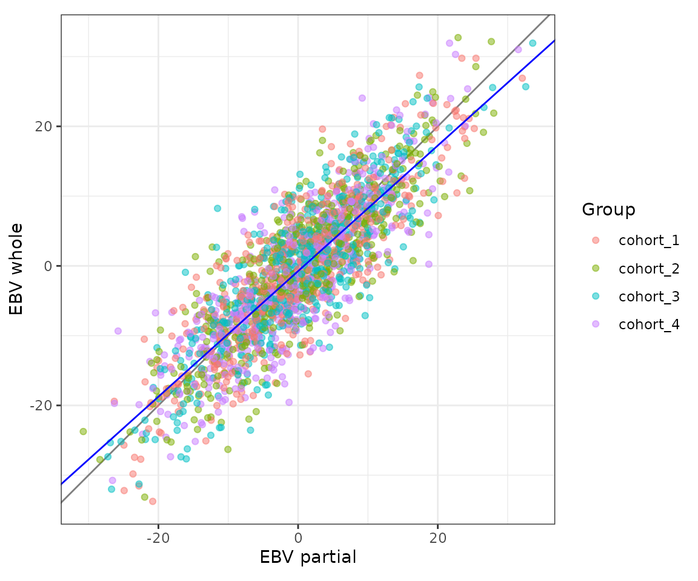
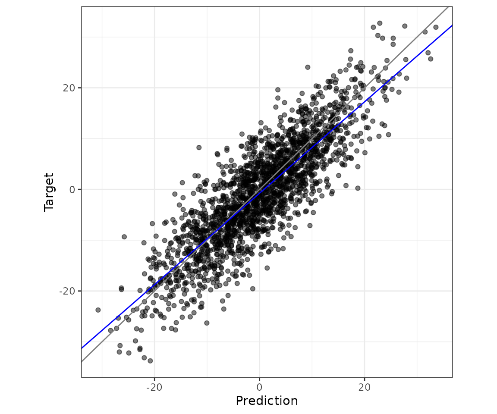
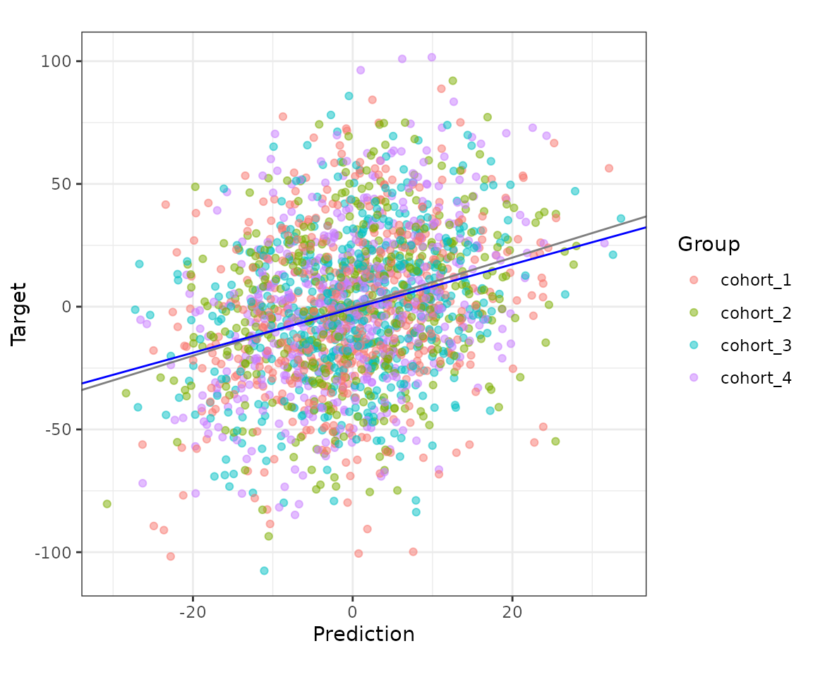

This vignette shows what validatoR can do, on a small simulated data set. It assumes you know what an EBV is and how a genetic evaluation is run, and it explains only what is specific to the package.
Which function to use
| You have | You want | Use |
|---|---|---|
| EBVs expressed on different bases | EBVs on a common base, before you compare or validate them | rebase_ebv() |
| Two evaluations of the same animals: a partial one, which leaves out the records of the validation animals, and a whole one, which uses all records | The level bias, the dispersion bias, the accuracy of the partial EBVs (the LR method), and the ratio of accuracies | validate_lr() |
| Two evaluations as above, and groups of animals such as cohorts, herds or sexes | The same statistics for each group, in one table | validate_lr_by_group() |
| Predictions and a target to validate them with: pre-corrected phenotypes, true breeding values from a simulation, or other EBVs | The correlation, the regression of the target on the prediction, the mean difference and the MSE, and the accuracy when the target is a pre-corrected phenotype | validate_prediction() |
The validation animals are the animals whose EBVs you validate, for example the youngest generation. The LR method assumes that the evaluation accounts for selection and that the validation set is large and diverse (see Further reading). All three functions can also return a plot.
The example data
library(validatoR)
head(toy_validation)
#> id partial whole pheno group inbreeding
#> 1 1 -5.8944134 -8.911696 22.69022 cohort_2 0.04505826
#> 2 2 -2.5932848 -1.678290 -13.08413 cohort_1 0.06127593
#> 3 3 15.2855374 10.134132 19.15088 cohort_1 0.03853050
#> 4 4 0.4118871 6.610153 -13.09139 cohort_2 0.06481019
#> 5 5 0.9993508 1.225545 96.34290 cohort_4 0.05916191
#> 6 6 16.8482270 11.134699 -10.74556 cohort_3 0.05335131toy_validation has 2,000 simulated animals: their EBVs
from a partial and a whole evaluation, a pre-corrected phenotype
simulated with a heritability of 0.3, a cohort (group) and
the inbreeding coefficient. The simulation fixes the LR statistics at
exact values (level bias 0.75, dispersion bias 0.90 and rho 0.85, the
correlation between the partial and the whole EBVs). The additive
genetic variance is 300.
Rebasing EBVs
Rebase first when the EBVs you want to validate are on different
bases, and validate the rebased EBVs afterwards.
rebase_ebv() subtracts the mean EBV of a base population
from the EBVs of all animals, so that the base population has a mean of
0 in each EBV column. The base population must lie outside the
validation animals: the level bias of a validation is one of the
quantities you want to estimate, and rebasing on the validation animals
themselves would remove part of it. rebase_ebv() takes two
data frames. The first has the ID in column 1 and one column of EBVs per
trait or evaluation, and the second has the IDs of the base
population.
# the EBVs to rebase
ebv <- toy_validation[, c("id", "partial", "whole")]
# the IDs of the base population
base_pop <- toy_validation[toy_validation$group == "cohort_1", "id", drop = FALSE]
rebased <- rebase_ebv(ebv, base_pop = base_pop)
head(rebased$rebased_ebv)
#> id partial whole
#> 1 1 -5.7118120 -8.360114
#> 2 2 -2.4106834 -1.126707
#> 3 3 15.4681388 10.685714
#> 4 4 0.5944885 7.161736
#> 5 5 1.1819522 1.777127
#> 6 6 17.0308284 11.686281Cohort 1 only illustrates the call. In a real validation, the base
population is a group outside the validation animals, for example older
animals. The result is a list, and the data frame is
rebased$rebased_ebv. Every animal in a column moves by the
same amount, so differences between animals do not change.
If you already know the values to subtract, use
constant_value instead of base_pop, with one
number per EBV column, in the order of the columns. Here 100 is
subtracted from partial and 90 from whole.
With plot = TRUE, the result also has plots, a
named list with one plot per EBV column, named after the columns of your
data. So here the plot of the column called partial is
plots$partial, and with your own data the names follow your
own columns. Each plot shows the rebased EBVs against the original ones:
the points stay on a line of slope 1, shifted by the value
subtracted.
rebased_constant <- rebase_ebv(ebv, constant_value = c(100, 90), plot = TRUE)
head(rebased_constant$rebased_ebv, 3)
#> id partial whole
#> 1 1 -105.89441 -98.91170
#> 2 2 -102.59328 -91.67829
#> 3 3 -84.71446 -79.86587
# the plot of the column called "partial"
rebased_constant$plots$partial
The examples below use the EBVs of toy_validation as
they are, because its two evaluations are already on the same base.
The LR method
validate_lr() takes one data frame per evaluation, with
the animal ID in column 1 and the EBV in column 2, and matches animals
by ID.
# get the partial EBV
partial <- toy_validation[, c("id", "partial")]
# get the whole EBV
whole <- toy_validation[, c("id", "whole")]
res <- validate_lr(partial, whole)
res$stats # view the statistics
#> value
#> n 2000
#> level_bias 0.75
#> dispersion_bias 0.9
#> rho 0.85
#> inc_acc 1.176The result is a list with stats, the table above, and
plot. The rows of stats are:
| Row | Meaning | Expectation |
|---|---|---|
n |
Number of validation animals: the animals found in both
the partial and the whole evaluation, or the animals of
val_group when it is provided |
|
level_bias |
Mean of the partial EBVs minus mean of the whole EBVs | Expected to be 0 if the partial EBVs are unbiased |
dispersion_bias |
Slope of the regression of the whole EBVs on the partial EBVs | Expected to be 1 if the partial EBVs are unbiased. Below 1 the partial EBVs are over-dispersed relative to the whole EBVs (or the whole EBVs are under-dispersed), above 1 the reverse |
rho |
Correlation between the partial and the whole EBVs, the ratio of their accuracies | rho = 1 means no gain in accuracy when moving from the partial to the whole evaluation |
inc_acc |
1 / rho, the increase in accuracy obtained
with the whole evaluation, as a ratio to the accuracy of the partial
evaluation |
In the example, the level bias is 0.75, the dispersion bias is 0.9 and rho is 0.85, exactly the values that were simulated. The partial EBVs are over-dispersed, as simulated.
To express inc_acc as the increase in accuracy relative
to the partial evaluation, in percentage, subtract 1 and multiply by 100
(Bonifazi et al., 2022). Here that is 17.6%. For example, a rho of 0.80
gives an inc_acc of 1.25, a relative increase in population
accuracy of 25% when moving from the partial to the whole
evaluation.
Legarra and Reverter (2018) suggest checking the level bias and the dispersion first, and comparing accuracies only for evaluations that are approximately unbiased, because the accuracy statistics rely on unbiasedness. If possible, use large validation sets of several hundred animals or more.
Accuracy of the partial EBVs
With var_a and the inbreeding of the validation animals,
validate_lr() adds accuracy_partial, the
population accuracy of the partial EBVs (the correlation between true
and estimated breeding values across the validation animals), and
level_bias_in_GSD, the level bias in genetic standard
deviations. var_a is the additive genetic variance. The
inbreeding is a data frame with the ID in column 1 and the coefficient
in column 2, or average_inbreeding, the average inbreeding,
if you only have that.
# get the inbreeding coefficients
inbreeding <- toy_validation[, c("id", "inbreeding")]
res_acc <- validate_lr(partial, whole, var_a = 300, inbreeding = inbreeding)
res_acc$stats # view the statistics
#> value
#> n 2000
#> level_bias 0.75
#> level_bias_in_GSD 0.0433
#> dispersion_bias 0.9
#> accuracy_partial 0.562
#> average_inbreeding 0.05001
#> var_a 300
#> rho 0.85
#> inc_acc 1.176Standard errors
With bootstrap = TRUE the validation animals are
resampled with replacement and every statistic is recomputed in each
resample. The SE column is the standard deviation of each
statistic across the resamples, and an approximate 95% interval is the
estimate plus or minus two standard errors. The default is 10,000
resamples and here is 200 just to keep this vignette fast.
# make the resamples reproducible
set.seed(1)
res_boot <- validate_lr(
partial,
whole,
var_a = 300,
inbreeding = inbreeding,
bootstrap = TRUE,
n_boot = 200
)
res_boot$stats
#> value SE
#> n 2000 NA
#> level_bias 0.75 0.1252
#> level_bias_in_GSD 0.0433 0.007226
#> dispersion_bias 0.9 0.01333
#> accuracy_partial 0.562 0.009329
#> average_inbreeding 0.05001 0.0002375
#> var_a 300 0
#> rho 0.85 0.006216
#> inc_acc 1.176 0.008617Plots
plot = TRUE adds a scatter plot of the whole EBVs on the
partial EBVs. Each point is an animal. The grey line has slope 1, and
the blue line is the regression of the whole EBVs on the partial EBVs,
so its slope is the dispersion bias.
res_plot <- validate_lr(partial, whole, plot = TRUE)
res_plot$plot
With var_a, plot_in_gsd = TRUE draws both
axes in genetic standard deviations, and
plot_verbose = TRUE adds the number of animals as a
subtitle and the main statistics as a caption.
res_gsd <- validate_lr(
partial,
whole,
var_a = 300,
plot = TRUE,
plot_in_gsd = TRUE,
plot_verbose = TRUE
)
res_gsd$plot
Choosing the validation animals
By default, validate_lr() uses all animals found in both
data frames. Often you want to validate only some animals, such as the
youngest selection candidates. To do that, pass val_group:
a data frame with the IDs of the validation animals in column 1 and,
optionally, a label in column 2.
The statistics are computed once, on all the animals of
val_group together. Before you trust one set of statistics,
it is reccomended to check that the validation group is homogeneous,
that is, that its animals behave alike. To help with this, you can label
the animals in column 2 of val_group, for example by cohort
or by sex, then setting plot_subgroups = TRUE colours the
points by that label, so you can see whether one subgroup differs from
the others. If the group is not homogeneous, you may want to validate
its subgroups separately. The next section shows how.
# the validation animals: the animals of cohorts 1 and 2, labelled by cohort
val_group <- toy_validation[
toy_validation$group %in% c("cohort_1", "cohort_2"),
c("id", "group")
]
res_group <- validate_lr(
partial,
whole,
val_group = val_group,
plot = TRUE,
plot_subgroups = TRUE
)
res_group$stats
#> value
#> n 984
#> level_bias 0.5749
#> dispersion_bias 0.8865
#> rho 0.8543
#> inc_acc 1.171
res_group$plot
In this example, the two cohorts behave alike.Validate several groups at once
Sometimes you want to monitor several groups of animals and see
whether the validation differs between them: all animals, the young
animals, the genotyped and the non-genotyped animals, different ages,
sexes, or lines. A bias that is hidden in the whole population may only
show up in one of these groups. validate_lr_by_group() runs
the validation for each group in one call and returns the results of all
groups in one table, so you do not have to repeat
validate_lr() for each group yourself.
It takes the same arguments as validate_lr(), plus a
table, groups. This table contains the animal IDs in column
1 and one column per each group you want to validate. There are two
types of columns you can define: logical and text. A logical column has
TRUE for the animals in the group. A text column has a
label for the animals in the group and NA for the rest.
Note that an animal can be in several groups.
In this example, we define two logical columns, one for each cohort, and a text column with the cohort labels (either cohort_1 or cohort_2).
# one column per group: two cohorts as logical columns, and the cohorts as labels
groups <- data.frame(
id = toy_validation$id,
cohort_1 = toy_validation$group == "cohort_1",
cohort_2 = toy_validation$group == "cohort_2",
cohort = toy_validation$group
)
# run the validation for all groups at once
res_by_group <- validate_lr_by_group(partial, whole, groups, var_a = 300)
#> Validating 4 groups with validate_lr(): all, cohort_1, cohort_2, cohort
#> [1/4] all
#> validate_lr(): 2000 validation animals.
#> [2/4] cohort_1
#> validate_lr(): 516 validation animals.
#> [3/4] cohort_2
#> validate_lr(): 468 validation animals.
#> [4/4] cohort
#> validate_lr(): 2000 validation animals.
#>
#> ---- Summary ------------------------------------
#> 4 groups: 4 ok, 0 with warnings, 0 failed.The messages show each group as it runs and a summary at the end. The
result has a groups table, with one row for each group, and
the statistics of all groups in one long table:
res_by_group$groups
#> group n_provided n status message
#> 1 all 2000 2000 ok
#> 2 cohort_1 516 516 ok
#> 3 cohort_2 468 468 ok
#> 4 cohort 2000 2000 ok
res_by_group$stats[res_by_group$stats$statistic == "rho", ]
#> group statistic value SE
#> 5 all rho 0.8500000 NA
#> 11 cohort_1 rho 0.8551642 NA
#> 17 cohort_2 rho 0.8535824 NA
#> 23 cohort rho 0.8500000 NAn_provided is the number of IDs listed in the group, and
n is the number of animals used, which are the listed
animals found in both evaluations. A group that cannot be validated, for
example with fewer than 3 animals, does not stop the others from being
validated. Its status is “failed” and its message says why.
The first group, all, is every animal found in both
evaluations, whether or not it is in a group. Its numbers are those of a
plain validate_lr() call. Use
include_all = FALSE to leave it out.
With plot = TRUE, plots has one plot for
each group. With plot_subgroups = TRUE, the points of a
text column are coloured by its labels. Because the plots are in a list,
you can assemble them yourself, for example with
patchwork::wrap_plots(res$plots).
res_plots <- validate_lr_by_group(
partial,
whole,
groups,
plot = TRUE,
plot_subgroups = TRUE,
verbose = FALSE
)
res_plots$plots$cohort
With split_labels = TRUE, each label of a text column
also becomes a group of its own, named cohort: cohort_1,
cohort: cohort_2, and so on.
Predictions against a target
validate_prediction() compares two numeric vectors of
the same length and order: the first prediction belongs to the first
target, and so on.
res_pred <- validate_prediction(
prediction = toy_validation$partial,
target = toy_validation$pheno,
h2 = 0.3
)
res_pred$stats
#> value
#> n 2000
#> correlation 0.2846
#> slope 0.9
#> intercept -0.75
#> mean_diff 0.75
#> mse 920.1
#> rmse 30.33
#> accuracy 0.5196| Row | Meaning |
|---|---|
n |
Number of pairs |
correlation |
Correlation between prediction and target |
slope |
Slope of the regression of the target on the prediction. 1 means no dispersion bias |
intercept |
Intercept of that regression |
mean_diff |
Mean prediction minus mean target, the level bias |
mse, rmse
|
Mean squared error and its square root, from
prediction - target
|
accuracy |
Correlation divided by sqrt(h2), only when
h2 is provided |
The accuracy is valid when the target is a pre-corrected phenotype
that was not used in the evaluation that produced the predictions. Here
it is 0.52, the value that was simulated. h2 should be the
heritability of the validation population. After selection it is lower
than in the base population, and the base-population value then
underestimates the accuracy. Estimates from phenotypes, including the
slope, are also sensitive to errors in the heritability and in the
pre-correction for fixed effects (Legarra and Reverter, 2018).
mse and rmse are only meaningful when
prediction and target are on the same scale, for example a partial and a
whole EBV, or EBVs and true breeding values. With var_a,
rmse_in_GSD gives the RMSE in genetic standard deviations.
This function also takes bootstrap = TRUE and
plot = TRUE, which draws the target against the
prediction:
res_rmse <- validate_prediction(
prediction = toy_validation$partial,
target = toy_validation$whole,
var_a = 300,
plot = TRUE
)
res_rmse$stats
#> value
#> n 2000
#> correlation 0.85
#> slope 0.9
#> intercept -0.75
#> mean_diff 0.75
#> mse 32.66
#> rmse 5.715
#> rmse_in_GSD 0.3299
res_rmse$plot
As in validate_lr(), plot_subgroups = TRUE
colours the points by group. Here group is a vector with
one label per animal, in the same order as the data. The statistics do
not change.
res_pred_group <- validate_prediction(
prediction = toy_validation$partial,
target = toy_validation$pheno,
h2 = 0.3,
group = toy_validation$group,
plot = TRUE,
plot_subgroups = TRUE
)
res_pred_group$plot
Messages and errors
The functions stop with a message when an input cannot be used.
validate_lr() leaves out animals found in only one of the
two evaluations and reports how many:
res_left_out <- validate_lr(partial[1:1990, ], whole)
#> 10 animal(s) in `whole` are not in `partial` and were left out.Further reading
Each function has a help page that describes every argument:
?rebase_ebv, ?validate_lr,
?validate_lr_by_group and
?validate_prediction.
The LR method is described in Legarra, A. and Reverter, A. (2018). Semi-parametric estimates of population accuracy and bias of predictions of breeding values and future phenotypes using the LR method. Genetics Selection Evolution 50:53. https://doi.org/10.1186/s12711-018-0426-6
The increase in accuracy as a percentage is described in Bonifazi, R., Calus, M. P. L., ten Napel, J., Veerkamp, R. F., Michenet, A., Savoia, S., Cromie, A. and Vandenplas, J. (2022). International single-step SNPBLUP beef cattle evaluations for Limousin weaning weight. Genetics Selection Evolution 54:57. https://doi.org/10.1186/s12711-022-00748-0